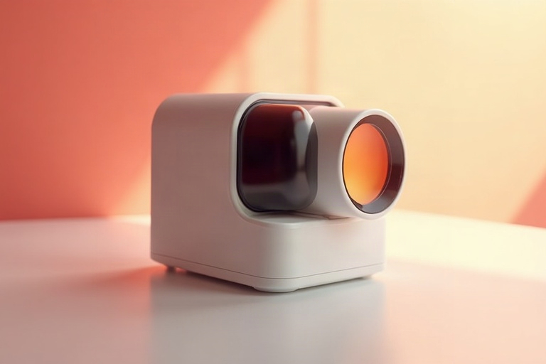

WELCOME!
Eye-Catching Glasses in Oklahoma City:
Classic & Contemporary
Do you favor a sophisticated, casual, artsy or elegant style? Nowadays, glasses are a trendy accessory, and we feature the most popular brands in designer optical fashion from around the world. So whatever your personal style preference may be, we have the perfect pair of designer frames for you!
Trendy Frames
Stop into our practice to get a new look.
3 Things That Make Urban Optics Unique
A CARING FOCUS
Our staff and eye care professionals specialize in understanding how the human eye really works. We also take great pride in getting to know you, as well as understanding you have limited time, so efficiency and accuracy is paramount, and Learn about our clinic

KNOWLEDGE & TECHNOLOGY
From the impact of blue light to myopia, and glaucoma to stroke signs we make sure our staff and technology are always l leading the pack. Our professional care
UNIQUE DESIGNER OPTICAL
We realize that looking good is feeling good and affects confidence. This is why we spend hours looking for quality frames that will not only last the test of time, but will give you the unique look to reflect you. Our favourite frames are...
OUR FOCUS IS…
Astigmatic Eye Care
Astigmatism is a very common eye condition that’s easily corrected with eyeglasses or contact lenses and on some occasions, surgery. Astigmatism is caused when your eye is not completely round. Because our bodies are not perfect, astigmatism occurs in nearly everybody to some degree but for some, not to the degree that it causes blurring...Read More on Astigmatism +
OUR FAVOURITE
Designer Brand Names
FEATURING